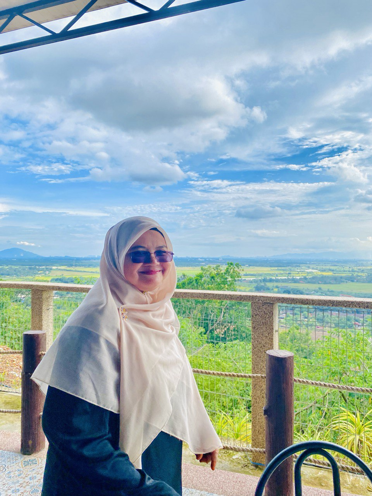
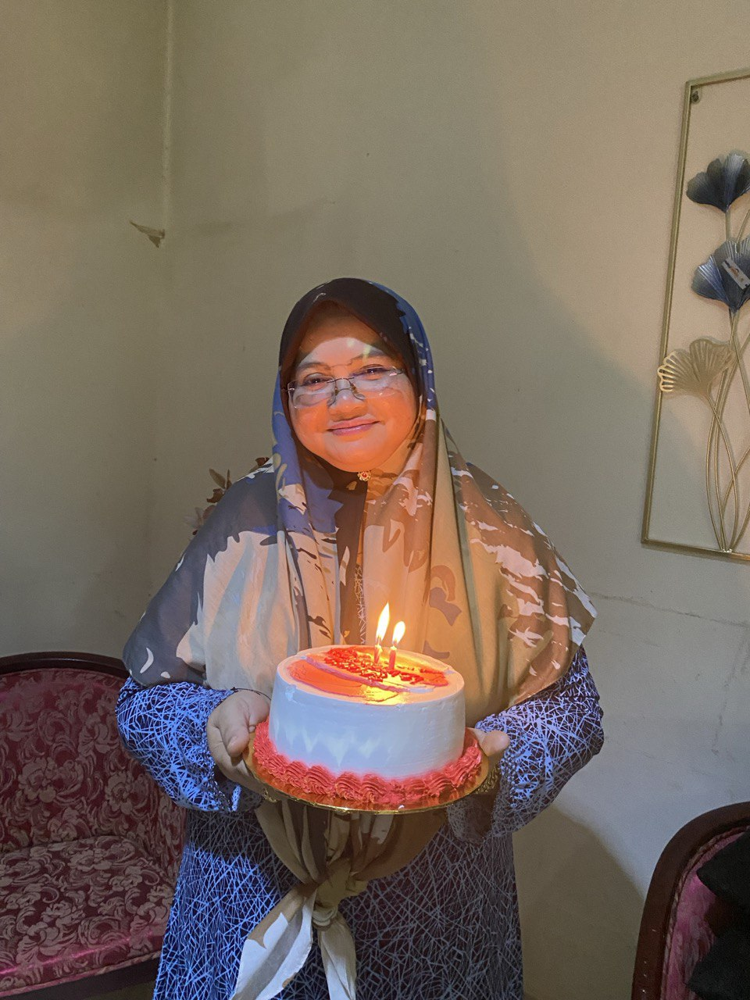
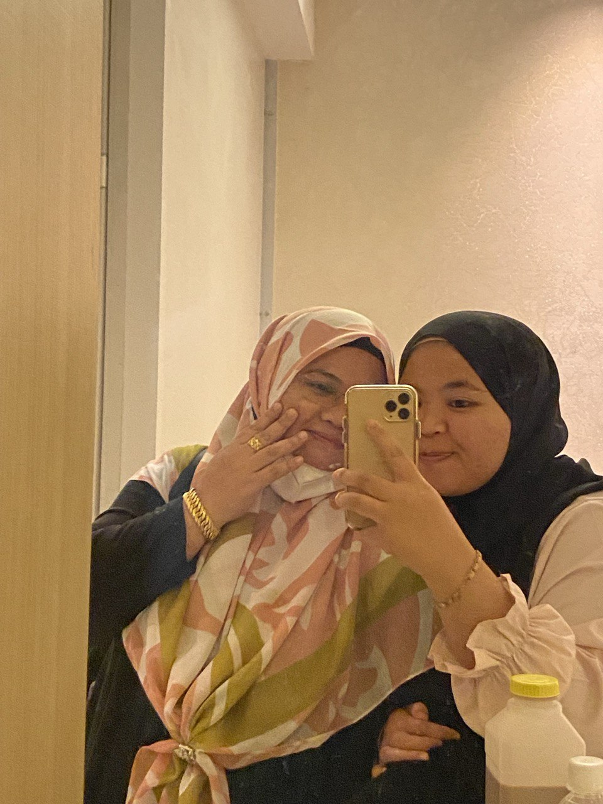

|

|

|
Mak
My mother, like a modern-day Cinderella, embodies both beauty and grace. Her kind soul radiates warmth, drawing everyone in with her gentle smile and polite demeanor. Yet, beneath her gentle exterior lies a mind brimming with knowledge. She is a teacher, guiding young minds with wisdom and patience, her passion for learning contagious.
In the kitchen, she transforms into a culinary alchemist, her creativity blossoming into delicious feasts. Each dish is a work of art, a testament to her talent and love. Witnessing her create is like watching magic unfold, aromas filling the air while anticipation builds.
Just like Cinderella, her beauty is not merely physical. It shines from within, reflected in her kind eyes and selfless nature. She is a constant source of support, always there with a listening ear and a gentle word of encouragement. Her unwavering faith and optimism inspire me to face any challenge.
My mother is more than just a teacher; she is a role model, a confidante, and my best friend. She is my Cinderella, proving that true beauty lies in the depths of a kind heart and a creative mind.